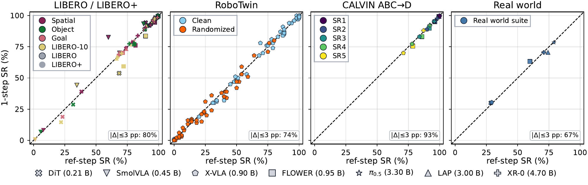
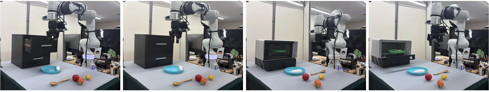
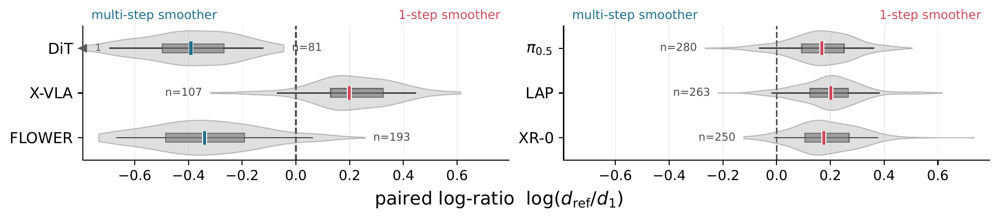
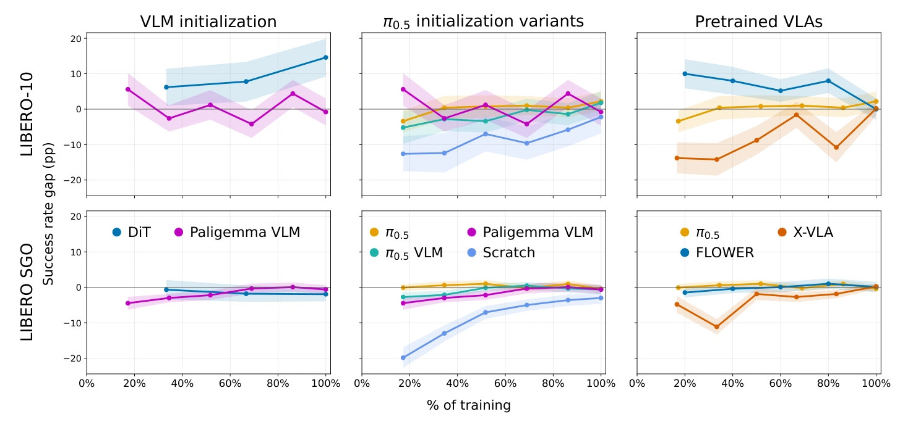
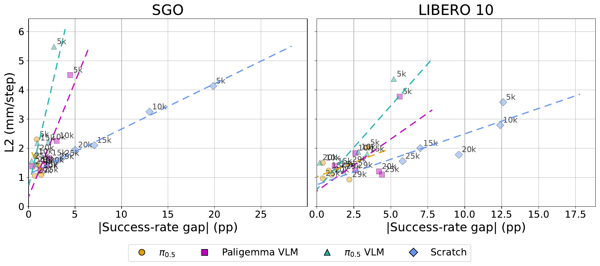

Shivakanth Sujit
Formerly Araya Inc. · Equal contribution
Araya Inc., Tokyo, Japan
* Equal contribution
Accepted at the 10th Conference on Robot Learning (CoRL 2026)
November 9–12, 2026 · Austin, Texas, USA
For large, sufficiently trained vision-language-action models, a single Euler step largely matches multi-step task success, with 1.6× to 4.8× faster action generation across the evaluated VLAs. No retraining, distillation, or auxiliary objectives are required.
We evaluate SmolVLA (450M), X-VLA (900M), FLOWER (947M), π₀.₅ (3.3B), LAP (3.3B), and XR-0 (4.7B), plus a 211M DiT baseline. Benchmarks sets span LIBERO (273K samples), LIBERO+ (2.24M), CALVIN ABC→D (1.07M), RoboTwin 2.0 (248K), our real-world Franka dataset (68.9K frames over 410 episodes), and D3IL Avoiding (96 demonstrations).

Flow matching is now the dominant approach for vision-language-action (VLA) robot policies, thanks to its expressiveness and simple training objective. Models such as π₀.₅, X-VLA, and SmolVLA pair a pretrained vision-language backbone with a flow matching action head.
The action head learns a velocity field that moves a Gaussian noise sample toward an action chunk, conditioned on camera images, robot state, and a language instruction. VLAs are trained with the rectified flow objective: the network regresses its velocity onto the straight line from the noise sample to a demonstrated action. At inference, the learned field is integrated from noise to action with N Euler steps, each a forward pass of the action head. Published VLAs use 4 to 10 steps, and every step adds latency, limiting control frequency and fluid motion in dynamic or contact-rich tasks.
A single step is exact only if the learned flow is straight. Although each training target is a straight line, these lines cross, so the learned paths are generally curved. In image generation, collapsing such flows to one or a few steps sharply degrades sample quality, which has motivated distillation, consistency, shortcut, and MeanFlow objectives that recover single-step generation.
Robot actions, however, are not images. Given the current observation, the action distribution may differ substantially from the image setting, and prior work finds that multimodality is largely absent from robotics datasets. The few-step methods applied to robotics were evaluated on small policies, where single-step inference is indeed substantially worse. Whether this degradation persists for large VLAs has not been thoroughly investigated.
We therefore ask: can large VLAs trained with the standard rectified flow objective, without additional regularization, generate actions with a single Euler step without losing performance?
We compare six publicly released VLAs, spanning 450M to 4.7B parameters, and a 211M DiT baseline across four simulation benchmarks. For each model and benchmark, we use the same checkpoint and matched seeds, changing only the number of Euler integration steps. Apart from the DiT baseline, which we train ourselves, simulation results use the authors' publicly released checkpoints as-is, so not every model has results on every benchmark.
Across 36 simulation test cells, TOST (two one-sided tests) checks whether one-step and multi-step inference are equivalent, rather than merely failing to find a difference. We compute the 90% confidence interval of the gap Δ = SRref − SR1. If it lies entirely within ±3 pp, the two are equivalent; if entirely outside, the difference is relevant; otherwise the test is inconclusive. finds 23 equivalent, 4 favoring multi-step, 2 favoring one-step, and 7 inconclusive. Equivalence uses a ±3 percentage-point margin for success rates; point estimates alone do not establish equivalence.
We evaluate four kitchen-style tasks with a Franka Emika Panda arm using paired, blinded A/B testing. The suite includes 4,800 rollouts, with 100 trials per task for each model and inference variant. Models are fine-tuned on our in-house dataset, and the policy noise is seeded within each pair.

Multi-step inference confers no systematic advantage. Only 3 of 24 task–model comparisons show a significant McNemar difference, and they run in both directions: the reference is better on Close Oven for π₀.₅ and FLOWER, while one step is better for FLOWER on Open Drawer. Pooled per-model gaps are small and bidirectional, with 4 of 6 models within ±2 pp. LAP is the only model whose pooled CI excludes zero (McNemar p = 0.0545), so a genuine multi-step advantage cannot be ruled out there. The physical evaluation budget does not establish equivalence within ±3 pp. Select Real world in the benchmark explorer above for pooled success rates per model.
A binary success rate does not capture how the robot moves. We therefore ask two further questions: does one-step inference make the executed motion less smooth, and does it narrow the range of behaviors a policy produces?
We compare the RMS joint jerk of paired real-world rollouts in which both variants succeed, since failures produce different jerk profiles. There is no consistent smoothness cost to one-step inference: the multi-step reference is meaningfully smoother only for the two sub-1B models (DiT, FLOWER), while for every model above 1B, one-step motion is marginally smoother. This mirrors the scale dependence of the success-rate results.

D3IL Avoiding is a multimodal control task with 24 valid ways to succeed. We built a visual version of the task and run 200 episodes per model with matched initial states and policy noise. One-step inference improves success for DiT and FLOWER, lowers it for X-VLA, and never hurts the larger models. It does, however, narrow behavior: under one step, DiT, FLOWER, and LAP each collapse onto a single successful strategy while keeping at least 99.5% success, and π₀.₅ drops from 19 observed successful strategies to 8.
Takeaway. For models above 1B parameters, one-step inference costs neither task success nor smoothness, but it concentrates behavior on fewer strategies. Where behavioral diversity matters, success rate alone hides this difference.
The main results show that multi-step inference does not guarantee higher success rates. To understand when step-equivalence emerges, we train models on LIBERO from different initializations and evaluate checkpoints throughout training. LIBERO pairs the short-horizon Spatial, Goal, and Object (SGO) suites with the long-horizon LIBERO-10 suite, where most gaps appear. We ask two research questions:
Q1: largely answered. Larger models with pretrained vision-language features reach step-equivalence, and robot-action pretraining is not required. We trained π₀.₅ and X-VLA from scratch, from a generic VLM (PaliGemma2 or Florence) or the VLA's own VLM backbone with a randomly initialized action expert, and from the full pretrained VLA. All three pretrained initializations reach step-equivalence on SGO, with near-zero gaps by the final checkpoint. Pretrained features alone are not enough, though: the 211M DiT, built on pretrained CLIP encoders, develops a multi-step advantage on LIBERO-10 that grows to 15 pp. It remains open whether training from scratch eventually reaches step-equivalence: a randomly initialized π₀.₅ still favors one-step inference at the final checkpoint, although its SGO gap narrows from −20 to −3 pp.
Q2: answered. Where multi-step inference helps, the benefit fades with training. We evaluated every run at checkpoints throughout training. π₀.₅ is step-equivalent on SGO from the earliest checkpoint. For X-VLA, extra Euler steps hurt early in training, and that gap collapses by the end. FLOWER's multi-step benefit is confined to LIBERO-10 at early and intermediate checkpoints and disappears at the final one. Its residual gap in Table 2 therefore reflects the authors' early-stopped release checkpoint, not the model's scale or architecture.

Action divergence vs. task success. For the π₀.₅ initialization variants, the L2 distance between 1-step and 10-step actions and the success-rate gap shrink together over training. But the pretrained variants can show large action divergence with a gap under 5 pp, while the from-scratch model turns a smaller divergence into an 18 pp gap. How far the two actions disagree does not by itself determine task success.

A single Euler step reduces per-chunk inference latency for the six VLAs by 1.6× to 4.8× on an NVIDIA A100. Speedups depend on the relative cost of the VLM backbone and action head.
| Model | Reference | 1 step | Speedup |
|---|---|---|---|
| DiT (baseline) | 30 ms | 15 ms | 2.0× |
| SmolVLA | 436 ms | 91 ms | 4.8× |
| X-VLA | 215 ms | 70 ms | 3.1× |
| FLOWER | 140 ms | 60 ms | 2.3× |
| π₀.₅ | 80 ms | 50 ms | 1.6× |
| LAP | 60 ms | 35 ms | 1.7× |
| XR-0 | 170 ms | 90 ms | 1.9× |
Source: Table 1. Speedups depend on the relative cost of the VLM backbone and action head. The largest speedup is for SmolVLA, whose success rates are not consistently step-equivalent.
@inproceedings{sujit2026onestep,
title = {When One Step Is Enough: An Empirical Study of
Euler Integration in Flow-Matching Policies},
author = {Sujit, Shivakanth and Nunziante, Luca and
Dossa, Rousslan Fernand Julien and Arulkumaran, Kai},
booktitle = {Proceedings of the 10th Conference on Robot Learning},
year = {2026},
note = {Accepted for publication},
url = {https://onestepflow.github.io/}
}
Formerly Araya Inc. · Equal contribution
Araya Inc. · Equal contribution · Correspondence
Araya Inc.
Formerly Araya Inc.